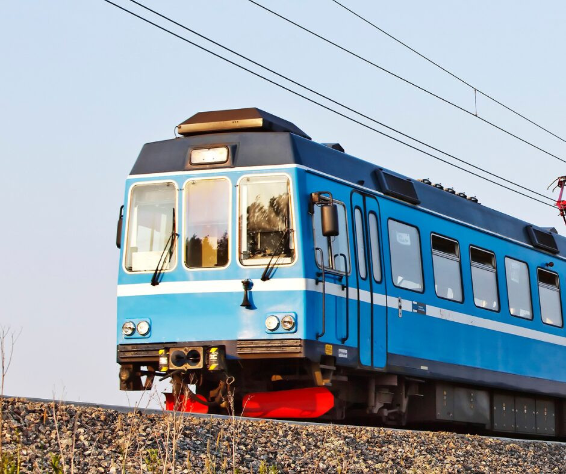

Chapter 1
Bulgaria, by train
The Balkan Express
23 to 30 June 2025More than 500 km by rail with young entrepreneurs and changemakers, who told their stories in four Human Libraries.
Entrepreneurship Check the details